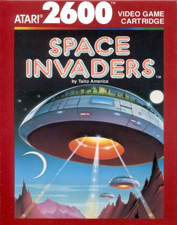
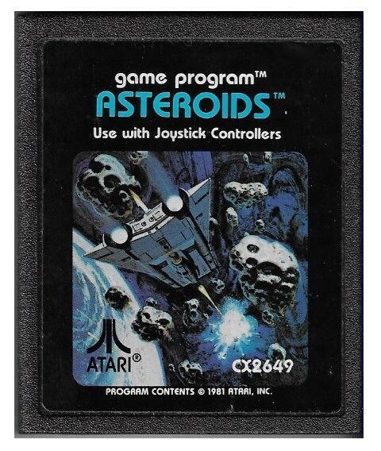

Historia de Pac-Man
Regresar
A finales de los años 70, los salones recreativos estaban dominados por oscuros juegos de disparos espaciales como Space Invaders y Asteroids, cuyo público era abrumadoramente masculino. En 1979, el diseñador de Namco, Toru Iwatani, se propuso crear un juego que atrajera a un público más amplio, incluyendo a mujeres y parejas. La inspiración central le llegó, según la leyenda de la industria, al tomar una porción de una pizza entera, revelando la icónica forma de un círculo amarillo con una boca abierta.


La Inteligencia Artificial y el Diseño (1980)
El juego se basó en el concepto fundamental de "comer" (taberu en japonés). El protagonista, inicialmente bautizado como Puck Man (derivado de la onomatopeya "paku paku" que describe el abrir y cerrar de la boca), debía devorar puntos dentro de un laberinto azul.
La verdadera revolución técnica de Puck Man fue la inteligencia artificial de sus cuatro enemigos. Iwatani no quería que los fantasmas simplemente persiguieran al jugador en línea recta de forma monótona, por lo que programó a cada uno con una "personalidad" y un algoritmo de movimiento distinto:
- Blinky (Rojo): Persigue a Pac-Man agresivamente y aumenta su velocidad a medida que quedan menos puntos en el laberinto (estado conocido en el código como "Cruise Elroy").
- Pinky (Rosa): Intenta emboscar a Pac-Man, calculando su trayectoria y apuntando cuatro casillas por delante de la dirección a la que el jugador se mueve.
- Inky (Cian): Utiliza un comportamiento complejo y errático que calcula una posición basada tanto en la ubicación de Pac-Man como en la de Blinky, intentando acorralar al jugador.
- Clyde (Naranja): Persigue a Pac-Man hasta que se acerca a menos de ocho casillas, momento en el que se asusta y huye hacia la esquina inferior izquierda del laberinto.

Para equilibrar esta presión constante, Iwatani introdujo las Power Pellets (Píldoras de Poder). Al consumirlas, los fantasmas se volvían azules y vulnerables, invirtiendo temporalmente los roles de cazador y presa para brindar al jugador un momento de empoderamiento catártico.
El Cambio de Nombre y el Fenómeno Mundial (1981-1982)
Cuando Namco licenció el juego a la compañía Bally/Midway para su distribución en Estados Unidos en 1980, los ejecutivos notaron un problema logístico grave: el nombre Puck Man impreso en las máquinas era fácilmente vandalizable, ya que solo bastaba raspar un poco la letra "P" para convertirla en una obscenidad ("F"). Para evitar esto, rebautizaron el juego definitivamente como Pac-Man.
El éxito en Norteamérica fue arrollador. Pac-Man agotó la provisión de monedas en múltiples ciudades, desatando la fiebre de los arcades. Se convirtió en la primera mascota real de los videojuegos y en un fenómeno cultural que generó un imperio de merchandising masivo, incluyendo cereales de desayuno, juguetes, una serie animada de Hanna-Barbera y la exitosa canción de música pop "Pac-Man Fever" (1982) de Buckner & Garcia, que llegó al top 10 de Billboard.
La Secuela Modificada: Ms. Pac-Man (1982)
El gigantesco impacto comercial llevó a la creación de una de las secuelas más importantes de la historia, la cual irónicamente no fue desarrollada por Namco.
Un grupo de programadores estadounidenses (General Computer Corporation) creó un kit de modificación (mod) para las placas arcade de Pac-Man llamado Crazy Otto. Midway compró los derechos de esta modificación, la pulió y la lanzó como Ms. Pac-Man. Esta entrega mejoró drásticamente la fórmula original al introducir múltiples laberintos de distintos colores, frutas que se movían libremente por la pantalla (en lugar de ser estáticas) y patrones de comportamiento de los fantasmas parcialmente aleatorios, haciéndolo mucho más difícil de memorizar. Se convirtió en el juego de arcade de fabricación estadounidense más vendido de la historia.

El Nivel 256 y la Evolución Moderna (1999-Actualidad)
Aunque Pac-Man está diseñado para jugarse infinitamente, una limitación matemática en su código original de 8 bits (un error de desbordamiento de enteros) provoca que, al llegar al nivel 256, la mitad derecha de la pantalla se corrompa con letras y símbolos incomprensibles. Este laberinto roto, conocido como la "Pantalla de la Muerte" (Kill Screen), hace imposible completar el nivel. En 1999, el jugador competitivo Billy Mitchell logró la primera puntuación perfecta verificada (3,333,360 puntos) al comer cada punto, fruta y fantasma vulnerable sin perder una sola vida hasta chocar con el límite del nivel 256.
A lo largo de las décadas, la franquicia logró reinventarse sin perder su simplicidad mecánica:

- Pac-Man Championship Edition (2007): Diseñado por el propio Iwatani antes de su retiro, modernizó la fórmula introduciendo laberintos que cambiaban dinámicamente, estéticas de neón, música techno y un enfoque en carreras de combos contra el reloj. Su secuela (DX) perfeccionó este sistema.
- Pac-Man 99 (2021): Adaptó brillantemente la mecánica de comer fantasmas al popular formato competitivo Battle Royale, enfrentando a 99 jugadores simultáneamente.